OceanX66.25
已评分科学产物做了什么
计算水团差异、6°C 界面、以10米为基准的两种混合层标准、真正的0–50米比容高度，以及截断水深下的 f/h₆ 和涡旋经过检验。
优点
修正后的NADW指标使用σθ=27.715；密度混合层深度为1月57.7米、6月21.4米，SSH季节幅度12.2厘米、上50米7.19厘米。多数后续修正被最终报告吸收。
不足 / 扣分理由
SUW搜索40–320米（敏感性为100–320米），而非论文密度区间和盐度阈值。缺真实深海地形，固定底部 f/h₆ 不能证明或否定真实深海机制。比容高度差异被过度归因于定义，模型偏差仍未排除；一条混合层曲线已失效。
逐项评分
| 指标 | 权重 | 0–4 | 原因 |
|---|---|---|---|
| K1 | 15 | 2 | NADW已修正，但SUW采用深度而非密度/阈值。 |
| K2 | 15 | 3 | 检验6°C界面和论文SSH分组。 |
| K3 | 15 | 3 | 两种标准均插值至10米参考层。 |
| K4 | 15 | 3 | 真正50米积分并检验参考选择。 |
| K5 | 10 | 2 | 截断 f/h₆，非真实深海位涡。 |
| 方法 / 机制 | 10 | 3 | 多数定义与截断限制明确。 |
| 差异解释 | 10 | 2 | 定义差异的归因超出证据。 |
| 可复现性 / 稳健性 | 10 | 3 | 报告、代码、表格齐全，标出失效图。 |
原始输出图 · 11
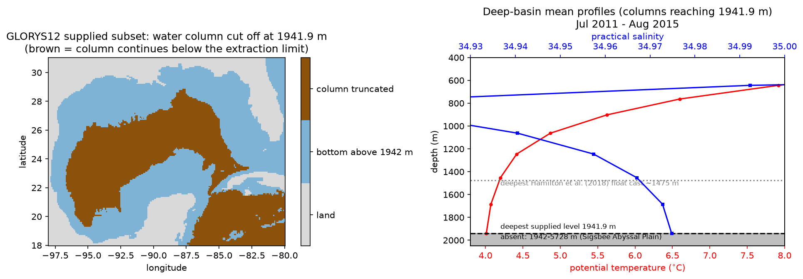
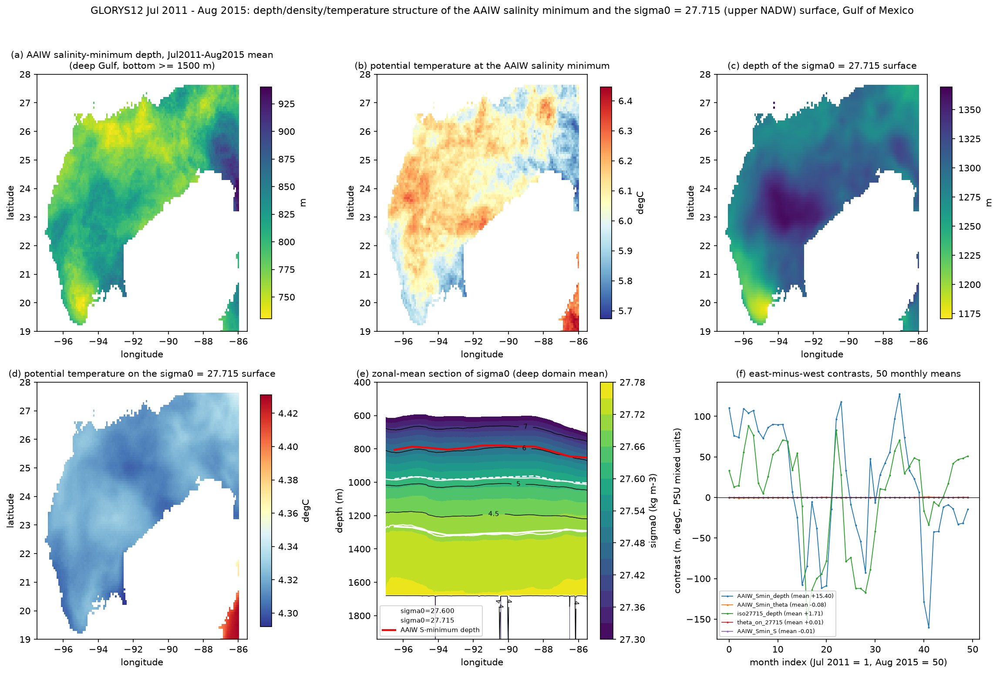
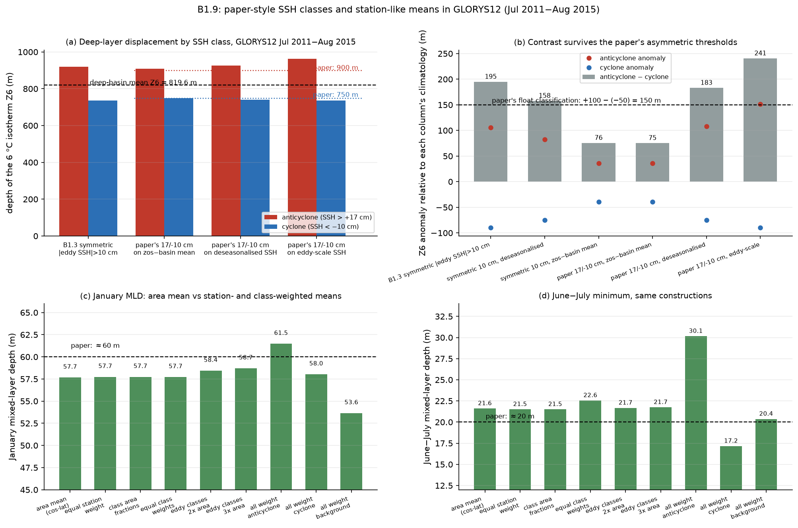
更多已保存输出图 (8)
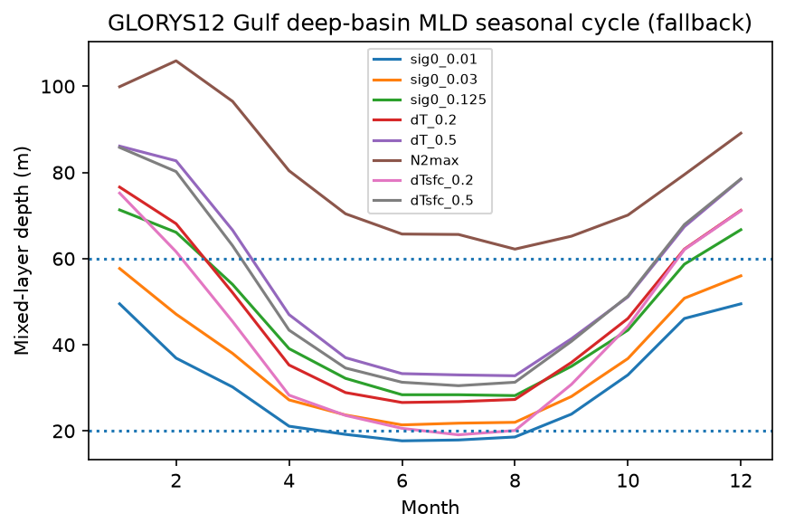
报告指出一条混合层曲线已失效；应使用修正表格，不能使用该曲线。
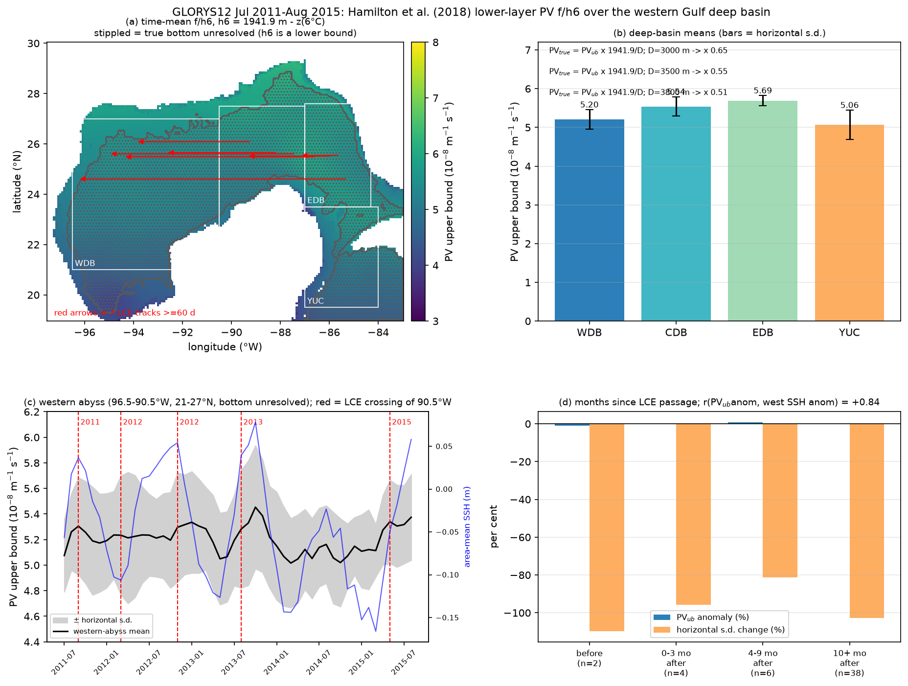
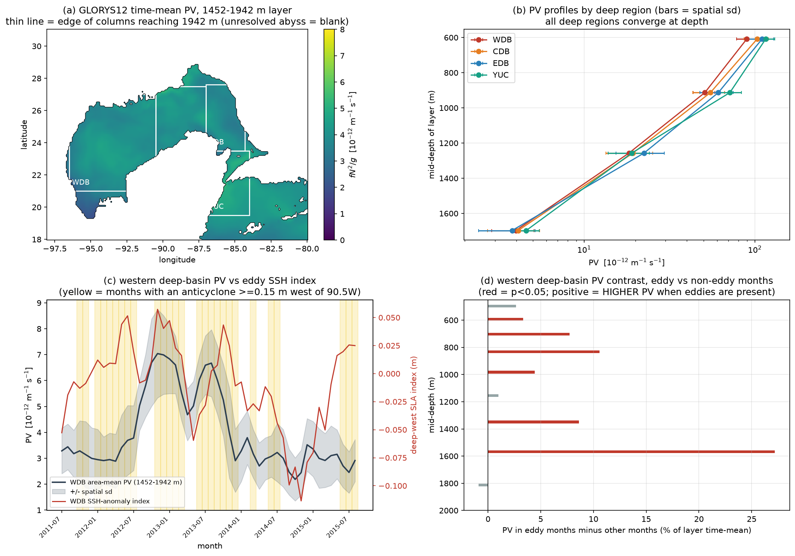
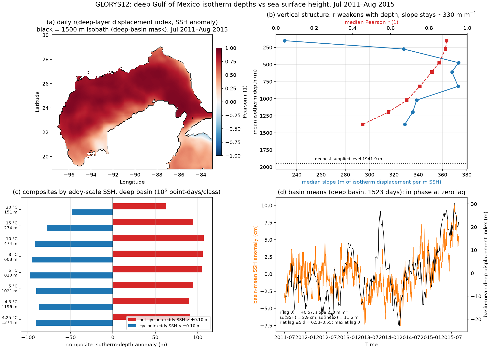
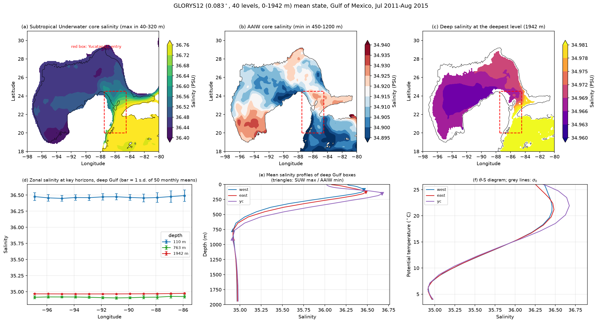
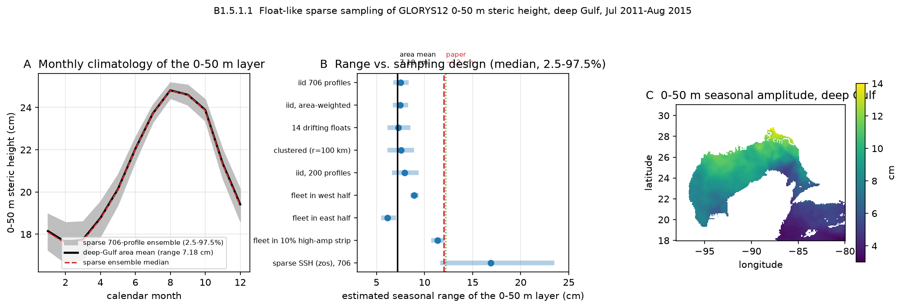
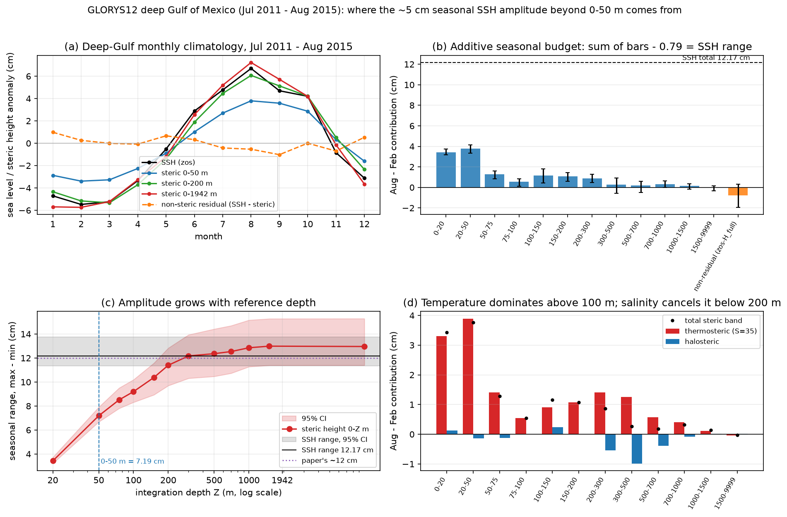
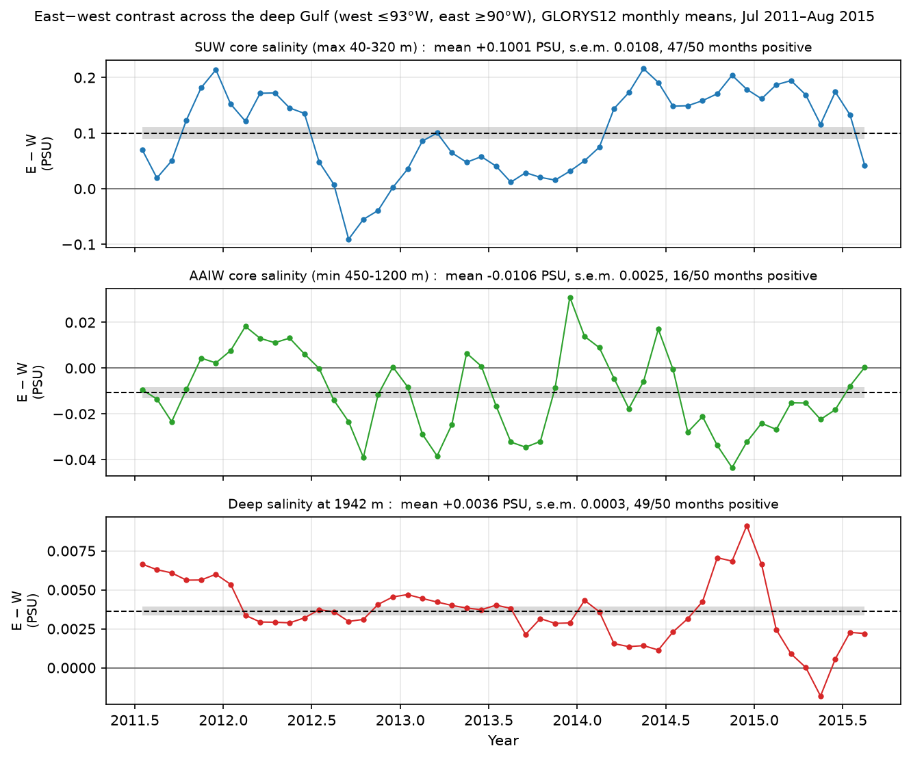
原始最终答案（英文）
# Testing Hamilton et al. (2018) against GLORYS12 daily fields for the Gulf of Mexico (July 2011 – August 2015)
## Summary
The supplied data are CMEMS GLORYS12V1 daily-mean physics for the Gulf of Mexico box 98°W–80°W, 18°N–31°N on the native 1/12° grid, three variables (`thetao`, `so`, `zos`), daily 2011-01-01 to 2017-12-31. The analysis window is 2011-07-01 to 2015-08-31 (50 months, 1520–1523 daily fields), the same window as the paper's 706 float profiles. **The decisive data limit is vertical: the supplied NetCDF extraction contains exactly 40 depth levels spanning 0.494–1941.8929 m** (the original CMEMS request recorded `maximum_depth = 2000`; the `z_max = 5727.9 m` in every file header is the parent product's column, not local data). 44.5 % of the Gulf water area inside the box, and 75.1 % of the western deep basin, has its water column cut off at 1941.9 m. No velocity fields are supplied, so potential vorticity can only be the baroclinic part.
Verdicts against the five findings as stated:
| # | Finding | Verdict |
|---|---|---|
| 1 | SUW, AAIW, NADW east–west gradients consistent with Loop Current / Yucatan sources | **Partly reproduced** (SUW reproduced; AAIW not reproduced; NADW partly reproduced, partly untestable) |
| 2 | Two-layer deep Gulf, isotherms deeper under the Loop Current and its eddies, shallower under cyclones, classified by SSH | **Partly reproduced** |
| 3 | Seasonal mean mixed-layer depth maximum ≈60 m in January, minimum ≈20 m in June–July | **Reproduced** under the paper's own mixed-layer criterion (partly reproduced across the full criterion space) |
| 4 | Basin-mean 0–50 m dynamic height and SSH seasonal range ≈12 cm with significant interannual variability | **Partly reproduced** (SSH and interannual variability reproduced; a literal 0–50 m steric height is not) |
| 5 | Low, homogeneous potential vorticity over the deepest part of the western basin produced by Loop Current eddy translation | **Not reproduced as an eddy-driven mechanism; partly reproduced as a description; not testable in the paper's exact form** (the abyssal plain below 1942 m is absent) |
All numbers below were computed from `thetao`/`so`/`zos` alone; the paper's own method details were recovered from its abstract (verified verbatim) and search-engine-indexed excerpts (literature acquisition mode was metadata-only, so no full text, tables or figure ordinates were read). Where a later analysis corrected an earlier one, the corrected value is used and marked.
---
### Finding 1 — water-mass gradients: partly reproduced
Subtropical Underwater is **reproduced**. The SUW salinity maximum is 36.70 PSU in the Yucatán/Loop Current entry box, 36.48–36.50 PSU in the eastern deep Gulf and 36.46 PSU in the western deep Gulf, i.e. +0.10 PSU east-minus-west in monthly snapshots (+0.155 PSU per 1000 km), the same sign in 92 % of the 50 months, in every season and calendar month, and unchanged when the winter mixed layer is excluded from the search window (+0.114 PSU for a 100–320 m search); the core deepens eastward from about 100 m to about 135 m. The gradient is therefore not a surface-layer artefact and is consistent with a Yucatán Channel source. Figure: `/import/home3/share/oceanx-bench/benchmarking_oceanx_test/runs/OceanX/Q07/attempt-1791162432223096723-b06b4c9a/workspace/OceanX Tasks/Q07--88a6814508c7/agents/ocean-process-ec2ddba2d5/outputs/glorys-watermass-east-west-gradients-gulf.png`.
Antarctic Intermediate Water is **not reproduced**, and this was tested twice as the paper states it. The salinity minimum itself is essentially uniform (34.904–34.919 PSU, east-minus-west −0.011 PSU, month-to-month spread 0.017 PSU). Tested as the paper describes the feature — a salinity minimum that rises east→west with σθ increasing and temperature decreasing by about 0.4 °C — the reanalysis gives the opposite or no signal: minimum depth 796.3 m in the west versus 811.7 m in the east (east-minus-west +15.4 ± 10.4 m, the reported sign in only 54 % of 50 months), σθ at the minimum invariant (27.465 west vs 27.467 east, +0.003 ± 0.008), and the temperature at the minimum 0.084 ± 0.055 °C *higher* in the west (6.094 °C vs 6.010 °C) — warming rather than the reported 0.4 °C cooling, and one fifth of the reported magnitude. Figure: `/import/home3/share/oceanx-bench/benchmarking_oceanx_test/runs/OceanX/Q07/attempt-1791162432223096723-b06b4c9a/workspace/OceanX Tasks/Q07--88a6814508c7/agents/ocean-process-01c2cc082e/outputs/glorys-aaiw-nadw-ew-structure-gulf.png`.
North Atlantic Deep Water is **partly reproduced and partly untestable**. The σθ = 27.715 surface sits at 1296.6 m in the deep-Gulf mean (1291.6 m in the western box) against the paper's ~1283 m, and it varies in depth by a few hundred metres (monthly p2–p98 344 m, s.d. 85 m) — but it shows no east–west depth gradient (+1.3 ± 8.9 m, positive in 64 % of months) and the water on that surface is 0.011 ± 0.004 °C *warmer* in the east, not cooler. The reported cool/fresh-east signature appears instead one isopycnal lighter, on σθ = 27.600 (east cooler by 0.039 ± 0.008 °C in 80 % of months). The deepest density reached anywhere in the supplied record is σθ = 27.760 at ~1924 m, so the NADW salinity maximum itself (below ~2000 m) is untestable here. At the deepest supplied level (1942 m) salinity does rise monotonically eastward by +0.009 PSU (34.966 → 34.975 PSU, 98 % month-consistent), consistent with inflow over the Yucatán sill, but this is a marginal-level statement, not the NADW core.
### Finding 2 — deep two-layer structure: partly reproduced
Within the supplied 0.5–1.94 km range the sign of the paper's relationship holds. The pointwise daily correlation of isotherm-depth anomaly with deseasonalised SSH anomaly is positive at every level, with median r = +0.89 (20 °C, mean depth 151 m), +0.85 (10 °C, 474 m), +0.69 (5 °C, 1021 m), +0.59 (4.5 °C, 1196 m) and +0.45 (4.25 °C, 1374 m); essentially no grid point is significantly negative. The relationship is local, not only a basin-wide mode: after removing the deep-basin spatial mean of both fields, 99 % of points still correlate positively (median r = +0.82), though the purely spatial anomalies at 4.5 °C fall to r ≈ 0.4 with 58 % of points negative. Basin-mean SSH and the deep-layer index are in phase (r = +0.57 at lag 0), but the seasonal correlation is not stable (DJF +0.47, MAM +0.80, JJA +0.78, SON −0.19).
Applying the paper's own classification (anticyclone SSH anomaly > +17 cm, cyclone < −10 cm) and its deep-layer reference (the 6 °C isotherm, whose mean depth in GLORYS12 is 819.6 m, close to the paper's ~800 m) gives class-mean 6 °C isotherm displacement of **+90.2 m under anticyclones and −71.0 m under cyclones** — a 161 m contrast — when the thresholds are applied to an SSH field built the paper's way (`zos` minus the daily basin-wide mean over bottom depths > 200 m); the same thresholds on the deseasonalised field give +105.8 / −78.9 m (185 m) and on the eddy-scale field +143.0 / −83.1 m (226 m). The earlier symmetric `|eddy SSH| > 10 cm` cut gave +100.7 / −83.1 m (184 m), so the threshold choice moves the contrast by only −12 % to +23 %: these values should be reported as a range (about 160–190 m for a paper-style classification), not as a single number, and the earlier single value is superseded. The remaining quantitative disagreement is the cyclone term (−71 to −83 m versus the paper's −50 m recovered from the indexed record), while the anticyclone displacement is consistent with the paper's +100 m. Figures: `/import/home3/share/oceanx-bench/benchmarking_oceanx_test/runs/OceanX/Q07/attempt-1791162432223096723-b06b4c9a/workspace/OceanX Tasks/Q07--88a6814508c7/agents/ocean-process-df4642f7c0/outputs/gulf-deep-isotherm-vs-ssh.png` and `/import/home3/share/oceanx-bench/benchmarking_oceanx_test/runs/OceanX/Q07/attempt-1791162432223096723-b06b4c9a/workspace/OceanX Tasks/Q07--88a6814508c7/agents/ocean-process-1d08840460/outputs/b19-paper-classification-vs-symmetric-cut.png`.
Interpretation limit stated explicitly: a positive isotherm-depth/SSH correlation is dynamically close to inevitable in a hydrostatic, altimetry-assimilated model, and the relation weakens systematically with depth (r 0.89 → 0.45; only ~41 % of grid points significantly correlated at 1374 m). The model result is therefore *consistent with* the paper's two-layer picture inside the top ~1.94 km; it does not independently demonstrate the mechanism, and the lower part of the paper's deep layer (roughly 1940–3000 m) is not testable.
### Finding 3 — seasonal mixed-layer depth: reproduced (paper's criterion)
The published record states the paper's criterion: the de Boyer Montégut pair applied to individual profiles, searched downward from the 10 m value with |ΔT| = 0.2 °C and Δσ = 0.03 kg m⁻³ reported together, with the temperature criterion giving the deeper value, and monthly means formed as station averages over float locations rather than an area-weighted grid (no shelf columns). Under exactly that density criterion over the deep Gulf, GLORYS12 gives a **January maximum of 57.7 m** and a **June–July minimum of 21.4–21.8 m** (broad June–August plateau of 21.4–22.0 m), i.e. within about 2 m of the paper's ~60 m and ~20 m, and the ~20 m minimum is numerically resolved by the near-surface levels (first reference level 11.4 m). The February value is 47.1 m and the seasonal range 36 m.
The number is not an artefact of area weighting: the equal-station-weight January mean is 57.74 m (area mean 57.67 m), and every SSH-class-weighted mean tested lies in 57.7–58.7 m, bounded by 53.7 m (background class) and 61.5 m (anticyclone class). Figure (with the generating node's own caveat that the file was written by a fallback plotting path and contains an abandoned non-MLD curve that must not be read as mixed-layer depth): `/import/home3/share/oceanx-bench/benchmarking_oceanx_test/runs/OceanX/Q07/attempt-1791162432223096723-b06b4c9a/workspace/OceanX Tasks/Q07--88a6814508c7/agents/ocean-process-3362843e30/outputs/mld-seasonal-cycle-glor12-gulf.png`.
Two qualifications keep this from being an unconditional match. (i) Over the same region the January maximum spans 49.5–86.1 m and the June–July minimum 17.8–33.2 m across five standard criteria (Δσ0 = 0.01/0.03/0.125 kg m⁻³, ΔT = 0.2/0.5 °C), so the ~20 m minimum is a statement about density criteria only; the temperature criteria give 76.6 m / 26.7 m. B1.9's independent reimplementation of the temperature criterion did not reproduce B1.4's series (42.1 m vs 76.6 m in January); this internal discrepancy is unresolved and is reported here as such, which is why the verdict rests on the density criterion — the criterion that anchors the paper's ~60 m. (ii) Including shelf columns, whose mixed layer is capped by the bottom, lowers the whole-Gulf January mean to 43.2 m; the paper's floats never sampled shelf columns, so the deep-Gulf value is the comparable one.
### Finding 4 — 0–50 m steric height and SSH: partly reproduced
Basin-mean SSH (`zos`) over the deep Gulf has a seasonal range of **12.2 cm (95 % CI 11.3–14.0 cm)**, matching the paper's ~12 cm, with maximum in August and minimum in February. A literal **0–50 m dynamic/steric height gives only 7.19 cm (CI 6.68–7.91)**, 59 % of the SSH range; the two curves are phase-locked (monthly-climatology r = 0.985) but not amplitude-consistent, and a ~12 cm steric range is reached only by integrating deeper (10.4 cm at 150 m, 11.40 cm at 200 m, 12.18 cm at 300 m, 12.36 cm at 500 m, 12.96 cm over the full supplied column).
The August–February budget closes exactly: 7.18 cm (0–50 m) + 4.05 cm (50–200 m) + 1.73 cm (200 m–bottom) − 0.79 cm non-steric residual = 12.17 cm. The missing amplitude is therefore baroclinic and below 50 m; the non-steric (mass/SSH-convention) term is not distinguishable from zero (CI −1.94 to +0.32 cm), salinity contributes ≤ 0.13 cm above 100 m and partly cancels temperature below 200 m, so the signal is thermosteric. Figure: `/import/home3/share/oceanx-bench/benchmarking_oceanx_test/runs/OceanX/Q07/attempt-1791162432223096723-b06b4c9a/workspace/OceanX Tasks/Q07--88a6814508c7/agents/statistics-e4211a72c6/outputs/b151_deep_gulf_sealevel_seasonal_budget.png`.
Float-like sampling does **not** explain the gap. Pooling daily fields the way the paper pooled profiles (by calendar month, ~56 profiles per month over the four years) gives a 0–50 m steric seasonal range with median 7.26–7.56 cm across realistic 14-float fleet designs, 95 % intervals ≈6.0–8.9 cm, and P(range ≥ 12 cm) = 0 in more than 15 000 replicate samples; the area mean is 7.18 cm, so realistic sampling adds only +0.1 to +0.4 cm. Only an implausible confinement of the whole fleet to the highest-amplitude 2.1 % of the deep Gulf (a strip at 27.3–28.8°N, 88.6–85.4°W, median 11.35 cm) would reach ~12 cm. Figure: `/import/home3/share/oceanx-bench/benchmarking_oceanx_test/runs/OceanX/Q07/attempt-1791162432223096723-b06b4c9a/workspace/OceanX Tasks/Q07--88a6814508c7/agents/statistics-d7ad97861e/outputs/b1511_sparse_sampling_seasonal_range.png`.
Two explanations survive and were not separated, so the attribution is deliberately weak: either the paper's "0–50 m dynamic height" label denotes a deeper-referenced upper-layer geopotential (their tabulated parameter elsewhere is a 1000–50 m dynamic height), or GLORYS12's top-50 m seasonal density cycle is genuinely about 1.5–1.7× too weak. An earlier claim that the gap was *purely* definitional was corrected on review and should not be used.
The second element of finding 4 — significant interannual variability — is **reproduced within the 4.7-year record**: a year factor is significant for both SSH (F = 17.98, p < 0.001) and 0–50 m dynamic height (F = 8.77, p = 0.0001), with January–August 2015 about +4.1 cm in SSH above the period mean. Four to five years cannot establish interannuality in a longer sense.
### Finding 5 — low, homogeneous deep potential vorticity: mechanism not reproduced, deepest part untestable
Descriptively, the deepest resolved layer (1452–1942 m) of the western deep basin has low potential vorticity (time-mean 3.98 × 10⁻¹² m⁻¹ s⁻¹, monthly 2.19–7.04), about 22× lower than the 454–763 m layer, and its horizontal structure is smooth. But the west/east contrast is **construction-dependent and changes sign**: with the layer-wise baroclinic measure f N²/g the western deep basin is 5–6 % *higher* than the eastern at 1568–1813 m, whereas with the paper's own lower-layer measure f/h6 (using the supplied 1941.9 m floor) the west is 8.6 % *lower* (5.20 vs 5.69 × 10⁻⁸ m⁻¹ s⁻¹) — the earlier "west is higher" value is corrected to "sign depends on the construction". Figures: `/import/home3/share/oceanx-bench/benchmarking_oceanx_test/runs/OceanX/Q07/attempt-1791162432223096723-b06b4c9a/workspace/OceanX Tasks/Q07--88a6814508c7/agents/ocean-process-98e87bff6a/outputs/deep-pv-west-gulf.png` and `/import/home3/share/oceanx-bench/benchmarking_oceanx_test/runs/OceanX/Q07/attempt-1791162432223096723-b06b4c9a/workspace/OceanX Tasks/Q07--88a6814508c7/agents/ocean-process-5f2f693d99/outputs/paper-pv-western-gulf.png`.
The eddy-driven mechanism fails on sign and on homogeneity. Five Loop Current eddies detached and crossed 90.5°W between 2011 and 2015 (2011-09-06, 2012-03-09, 2012-11-01, 2013-08-09, 2015-05-21, at 24.4–26.1°N, directly over the Sigsbee Abyssal Plain). After their passage the western abyssal potential vorticity was +0.5 % (0–3 months) and +0.4 % (4–9 months) higher, not lower; its horizontal standard deviation was 10–45 % *larger* in the nine months after passage; and the deseasonalised western abyssal potential-vorticity anomaly correlates +0.84 with the western deep SSH anomaly — the adiabatic isotherm-heave sign, the opposite of homogenisation. An earlier "eddy months are followed by higher western PV" finding is confirmed, with the added detail that it reflects heave rather than mixing.
Why the literal claim stays untestable here: the dominant term of h6 = water depth − z(6 °C) is the water depth, and **75 % of the cells of the western box (93.4 % of all columns deeper than 1500 m) have their bottom unresolved** at 1941.9 m, where h6 can only be bounded; in resolved columns (800 m < D < 1941.9 m) 98 % of the horizontal variance of h6 comes from bathymetry and only 2 % from the isotherm depth. The supplied fields also contain no velocity, so relative vorticity cannot be included. A new 0–5728 m extraction of the same product plus its bathymetry would be needed for a like-for-like test of the paper's metric; every abyssal value above is an upper bound too large by the factor 1941.9/D (0.65 at D = 3000 m, 0.51 at D = 3800 m).
---
## Why these differ from the paper's float observations
1. **Depth truncation dominates findings 5, the abyssal part of 2, and the NADW core of 1.** The paper's floats had a deepest practical temperature level of 1475 m and an analysis lower limit of 1500 m, so most of their deep-layer statistics are inside the supplied window — indeed the model's σθ = 27.715 surface (1292 m) and mean 6 °C isotherm (819.6 m) are close to the paper's 1283 m and ~800 m — but the Sigsbee Abyssal Plain (3000–4000 m), where finding 5's "deepest part of the western basin" lives, is not in the data at all. The bulk of the finding-5 disagreement is a data-geometry limit, not a model-versus-float result. Figure: `/import/home3/share/oceanx-bench/benchmarking_oceanx_test/runs/OceanX/Q07/attempt-1791162432223096723-b06b4c9a/workspace/OceanX Tasks/Q07--88a6814508c7/agents/literature-dd7bf0a559/outputs/glorys-abyssal-gap.png`.
2. **Definitional mismatch, not physics, explains most of the steric gap (finding 4).** With the paper's own mixed-layer criterion recovered from the published record, finding 3 matches to 2 m; with their lower-layer potential-vorticity construction the west/east PV contrast flips sign; with a literal reading of "0–50 m dynamic height" the steric amplitude is 7.2 cm instead of 12 cm, while the model's own SSH reproduces 12.2 cm and a ≥200–300 m integral reproduces ~12 cm.
3. **Float sampling is a demonstrably small term for the one case where it could be tested.** Sparse, eddy-biased station sampling of the model's own fields moves the 0–50 m steric seasonal range by only +0.1 to +0.4 cm (worst realistic case +1.7 cm for a western-Gulf fleet), far short of the ~5 cm needed. The paper's station averaging over 50–75 profiles per calendar month is therefore unlikely to be the source of the 12 cm steric figure.
4. **The reanalysis's own constraint structure, not float sampling, organises the agreement pattern.** Agreements cluster where the model is observationally constrained (SSH, upper ocean) or where the diagnostic is hydrostatically near-inevitable (isotherm depth rising with SSH in a hydrostatic, altimetry-assimilated model); disagreements cluster between 600 and 2000 m, where the model is essentially unconstrained by Argo, and in the abyss, which is absent. The one candidate eddy-driven deep signal in the record — a secular decline of western deep potential vorticity (−8.2 % yr⁻¹ at 1452–1942 m against a flat eastern basin) — is directionally compatible with the paper's mechanism but is a single 50-month realisation confounded with model drift, and temperature, salinity and SSH alone cannot separate the two.
5. **No float trajectories or profile dates were supplied**, so the decisive test — collocating the reanalysis on the 706 actual profile positions and dates — could not be run; every statement about float sampling here is an interpretation of the paper's described sampling design, not a measurement of it.
## Remaining uncertainties that this dataset cannot settle
* The abyssal Gulf below 1941.9 m, hence the NADW core, the lower part of the deep layer, and the paper's h6-defined potential vorticity. Needs a new 0–5728 m extraction of the same product plus its bathymetry.
* The paper's exact mixed-layer and steric-curve definitions and its tabulated values (literature access was metadata-only). This is what keeps finding 4 at "partly reproduced" and finding 3 conditional on the density criterion.
* The unresolved internal inconsistency between two mixed-layer implementations (January temperature-criterion values 76.6 m vs 42.1 m).
* Whether the 0–50 m steric amplitude gap is definitional or a genuine ~1.5–1.7× weakness of the model's top-50 m seasonal density cycle; needs an independent observed upper-ocean seasonal climatology.
* Whether any part of the deep potential-vorticity change is irreversible rather than adiabatic heave; needs velocity or tracer fields, which are not supplied.
## Research Tree
**B1 [active] (ROOT)** — Can the supplied GLORYS12 daily temperature, salinity and sea surface height for Jul 2011–Aug 2015 in the Gulf of Mexico reproduce the five findings of Hamilton et al. (2018, JPO, doi:10.1175/JPO-D-17-0205.1), and where do differences from the 706 float profiles arise?
* **B1.1 [completed]** What exactly does Hamilton et al. (2018) report, and how was each finding derived from the float data? → All five statements confirmed verbatim in the abstract; two-layer division = 6 °C isotherm (mean 800 m); MLD criterion = de Boyer Montégut pair, 60/20 m; steric 0–50 m vs altimetric SSH ≈12 cm; eddy thresholds SSH > 17 cm / < −10 cm; low-PV defined as f/h6 with h6 = water depth − z(6 °C); floats reached 1475 m practically, analysis limit 1500 m; only abstract and indexed excerpts could be verified.
* **B1.2 [completed]** Water-mass east–west gradients (first pass) → Partly reproduced: SUW +0.10 PSU east-minus-west (92 % of months); AAIW minimum uniform (34.904–34.919 PSU); NADW only testable to 1942 m (+0.009 PSU eastward).
* **B1.2.1 [completed]** The paper's own AAIW/NADW gradients (depth, σθ, temperature) → AAIW **not reproduced** (depth gradient +15.4 ± 10.4 m with the wrong sign in 46 % of months; σθ invariant; T 0.084 °C *warmer* in the west vs the reported 0.4 °C cooling); NADW **partly reproduced** (σθ = 27.715 surface at 1296.6 m vs ~1283 m, no east–west depth gradient, warmer east; the cool-east signature sits one isopycnal lighter at σθ = 27.600, −0.039 °C in 80 % of months); NADW core below ~2000 m untestable.
* **B1.3 [completed]** Two-layer structure vs SSH classification → Partly reproduced: median r = +0.89 at 151 m falling to +0.45 at 1374 m; +100 m under anticyclones vs −93 m under cyclones with a 10 cm symmetric cut; relation weakens with depth; below 1942 m untestable.
* **B1.4 [completed]** Seasonal mixed-layer depth (criterion sweep) → January 57.7 m and June–July 21.4–21.8 m under the standard density criterion; 49.5–86.1 m / 17.8–33.2 m across five criteria; whole-Gulf 43.2 m / 17.8 m.
* **B1.5 [completed]** 0–50 m steric height and SSH seasonal range → SSH 12.2 cm (CI 11.3–14.0) matches ~12 cm; 0–50 m steric 7.2 cm (CI 6.7–7.9); curves phase-locked (r = 0.985); interannual variability significant (p < 0.001; 2015 ≈ +4.1 cm).
* **B1.5.1 [completed]** Where the missing ~5 cm sits → Baroclinic and below 50 m: 7.18 (0–50 m) + 4.05 (50–200 m) + 1.73 (200 m–bottom) − 0.79 (non-steric residual) = 12.17 cm; full-column steric 12.96 cm; ~12 cm needs a ≥200–300 m integral; salinity ≤ 0.13 cm above 100 m.
* **B1.5.1.1 [completed]** Float-like sparse sampling → Median 7.26–7.56 cm, P(range ≥ 12 cm) = 0 in > 15 000 replicates; sampling cannot explain the gap.
* **B1.6 [completed]** Low, homogeneous deep potential vorticity → Partly reproduced as a description, not reproduced as an eddy-driven mechanism, not testable over the true deepest part; the west/east contrast was later **corrected** as construction-dependent (see B1.6.2).
* **B1.6.1 [completed]** Is the source truncated at 1942 m? → Yes: all 252 files have 40 levels to 1941.8929 m (original extraction `maximum_depth = 2000`); 44.5 % of the Gulf water area and 75.1 % of the western deep basin is cut off; reaching the abyss needs a new deep extraction.
* **B1.6.2 [completed]** The paper's own f/h6 with detached 17 cm contours → With f/h6 the west is 8.6 % *lower* than the east, the opposite sign to B1.6's f N²/g measure, so the sign is construction-dependent; five eddies crossed 90.5°W and left PV +0.5 % higher and 10–45 % *less* homogeneous afterwards, with PV–SSH correlation +0.84 (adiabatic heave signature); 75 % of western-box cells have unresolved bottom.
* **B1.7 [completed]** Recovering the paper's definitions from the published record → MLD = de Boyer Montégut pair from 10 m, station averages over float locations (no shelf); finding 4's steric curve is a 0–50 m height equivalent plotted against altimetric SSH, and the paper's tabulated parameter is a 1000–50 m dynamic height. Consequence: finding 3 → reproduced under the paper's density criterion; finding 4 → partly reproduced under the literal reading.
* **B1.8 [completed]** Challenge of the five verdicts → Finding 4's 0–50 m steric element is the most vulnerable (two mutually exclusive explanations survive; the purely definitional attribution must be softened); finding 2's correlation is dynamically near-inevitable and shows consistency, not mechanism; finding 5's diagnostic is construction-dependent; the agreement pattern tracks the reanalysis's constraint structure rather than float sampling; the absent velocity field only caps mechanism claims.
* **B1.9 [completed]** The paper's own thresholds and 6 °C reference (retest of findings 2 and 3) → Finding 2 partly reproduced: class-mean 6 °C displacement +90.2 / −71.0 m (161 m contrast; 226 m on the eddy field) against 184 m for the symmetric cut, so values should be reported as a range; the cyclone term (−71 to −83 m vs the paper's −50 m) is the remaining disagreement. Finding 3 reproduced: station-weight mean 57.74 m, all class-weighted means 57.7–58.7 m. Also flags the unresolved temperature-criterion MLD discrepancy (42.1 m vs B1.4's 76.6 m).
Candidate directions carried but not pursued (proposals of returned nodes): eddy-tracking of the SUW gradient and the westward decay length of the 1942 m salinity anomaly (B1.2#1, B1.2#2); collocation on the actual float trajectories (B1.2#3, B1.5.1.1#3, B1.8#2 — requires the float files, not supplied); a heave-free reference for the deep displacement (B1.3#2); year-anomaly rechecks of the 2015 signal (B1.5#2, B1.5.1#2); drift-versus-ventilation of the western deep potential-vorticity decline (B1.6#3, B1.6.2#3); full-depth re-extraction (B1.6#1, B1.6.2#1); an independent upper-ocean seasonal climatology (B1.5.1#3, B1.8#3); the companion report and full-text table values (B1.7#3, blocked by metadata-only acquisition). These were left unadopted because each needs data this workspace does not hold or would not change the verdicts above.
No figure paths were invented; every figure cited above appears in a returned Expert receipt under Saved figures.证据及来源
/import/home3/share/oceanx-bench/benchmarking_oceanx_test/runs/OceanX/Q07/attempt-1791162432223096723-b06b4c9a
- workspace/OceanX Tasks/Q07--88a6814508c7/agents/discussion-6801b17fb5/reports/B1.8/report.md
- workspace/OceanX Tasks/Q07--88a6814508c7/agents/literature-4034171960/reports/B1.1/report.md
- workspace/OceanX Tasks/Q07--88a6814508c7/agents/literature-a893838aac/analysis.py
- workspace/OceanX Tasks/Q07--88a6814508c7/agents/literature-a893838aac/reports/B1.7/report.md
- workspace/OceanX Tasks/Q07--88a6814508c7/agents/literature-dd7bf0a559/analysis.py
- workspace/OceanX Tasks/Q07--88a6814508c7/agents/literature-dd7bf0a559/reports/B1.6.1/report.md
- workspace/OceanX Tasks/Q07--88a6814508c7/agents/ocean-process-01c2cc082e/analysis.py
- workspace/OceanX Tasks/Q07--88a6814508c7/agents/ocean-process-01c2cc082e/reports/B1.2.1/report.md
- workspace/OceanX Tasks/Q07--88a6814508c7/agents/ocean-process-1d08840460/analysis.py
- workspace/OceanX Tasks/Q07--88a6814508c7/agents/ocean-process-1d08840460/reports/B1.9/report.md
- workspace/OceanX Tasks/Q07--88a6814508c7/agents/ocean-process-3362843e30/analysis.py
- workspace/OceanX Tasks/Q07--88a6814508c7/agents/ocean-process-3362843e30/reports/B1.4/report.md
- workspace/OceanX Tasks/Q07--88a6814508c7/agents/ocean-process-5f2f693d99/analysis.py
- workspace/OceanX Tasks/Q07--88a6814508c7/agents/ocean-process-5f2f693d99/reports/B1.6.2/report.md
- workspace/OceanX Tasks/Q07--88a6814508c7/agents/ocean-process-98e87bff6a/analysis.py
- workspace/OceanX Tasks/Q07--88a6814508c7/agents/ocean-process-98e87bff6a/reports/B1.6/report.md
- workspace/OceanX Tasks/Q07--88a6814508c7/agents/ocean-process-df4642f7c0/analysis.py
- workspace/OceanX Tasks/Q07--88a6814508c7/agents/ocean-process-df4642f7c0/reports/B1.3/report.md
- workspace/OceanX Tasks/Q07--88a6814508c7/agents/ocean-process-ec2ddba2d5/analysis.py
- workspace/OceanX Tasks/Q07--88a6814508c7/agents/ocean-process-ec2ddba2d5/reports/B1.2/report.md
- workspace/OceanX Tasks/Q07--88a6814508c7/agents/statistics-9a31b4f446/analysis.py
- workspace/OceanX Tasks/Q07--88a6814508c7/agents/statistics-9a31b4f446/reports/B1.5/report.md
- workspace/OceanX Tasks/Q07--88a6814508c7/agents/statistics-d7ad97861e/analysis.py
- workspace/OceanX Tasks/Q07--88a6814508c7/agents/statistics-d7ad97861e/outputs/b1511_sparse_sampling_range_summary.csv
- workspace/OceanX Tasks/Q07--88a6814508c7/agents/statistics-d7ad97861e/outputs/b1511_sparse_seasonal_cycle.csv
- workspace/OceanX Tasks/Q07--88a6814508c7/agents/statistics-d7ad97861e/reports/B1.5.1.1/report.md
- workspace/OceanX Tasks/Q07--88a6814508c7/agents/statistics-e4211a72c6/analysis.py
- workspace/OceanX Tasks/Q07--88a6814508c7/agents/statistics-e4211a72c6/outputs/b151_augfeb_depth_budget.csv
- workspace/OceanX Tasks/Q07--88a6814508c7/agents/statistics-e4211a72c6/outputs/b151_range_vs_depth.csv
- workspace/OceanX Tasks/Q07--88a6814508c7/agents/statistics-e4211a72c6/reports/B1.5.1/report.md
- workspace/OceanX Tasks/Q07--88a6814508c7/agents/ocean-process-3362843e30/scratch/mld_lib.py